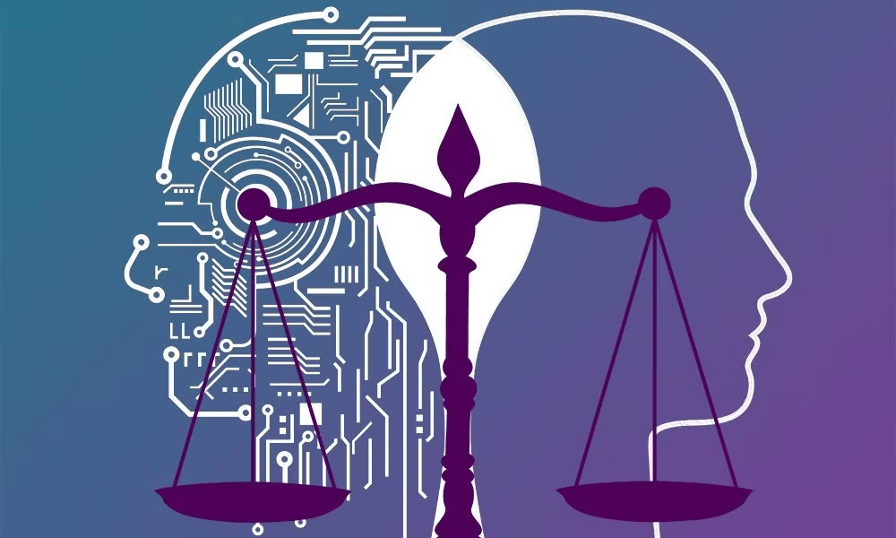

Ética na inteligência artificial:
A inteligência artificial substituirá os humanos? Poderia se voltar contra seus criadores? É um perigo para a espécie humana? Essas são apenas algumas das questões que provocaram o debate público e abalaram a mídia desde a implantação maciça de ferramentas geradoras de IA e as declarações sensacionalistas de algumas figuras públicas. No entanto, por mais interessantes que as especulações sejam do ponto de vista filosófico, a maioria dos especialistas concorda que são um tanto prematuras. É verdade que a inteligência artificial tem um potencial enorme. É uma tecnologia que automatizará uma ampla gama de tarefas, criará novos serviços e, em última análise, tornará as economias mais eficientes. A IA generativa marca um novo estágio nessa tendência subjacente, cujas múltiplas aplicações estamos apenas começando a explorar. No entanto, não devemos perder de vista o fato de que, apesar de seu notável desempenho, os sistemas de IA são essencialmente máquinas, nada mais do que algoritmos integrados a processadores capazes de assimilar grandes quantidades de dados.
Diferentes impressões e questões éticas:

Fomos informados de que essas novas ferramentas serão capazes de superar o teste de Turing. Isso provavelmente é verdade, mas esse teste – que antes era considerado capaz de traçar a linha divisória entre inteligência humana e inteligência artificial – há muito deixou de ter qualquer valor real. Essas máquinas são incapazes de inteligência humana – no sentido mais amplo do termo – reflexividade e consciência, e provavelmente serão assim por muito tempo. Não se pode deixar de pensar que aqueles que imaginam que essas ferramentas em breve terão essas características estão sendo muito influenciados pela ficção científica e por figuras míticas como Prometeu ou Golem, que sempre exerceram um certo fascínio sobre nós. Se adotarmos um ponto de vista mais prosaico, percebemos que as questões éticas levantadas pela crescente importância da inteligência artificial não são novidade e que a chegada do ChatGPT e outras ferramentas simplesmente as tornaram mais prementes. Além da questão do emprego, essas questões se relacionam, por um lado, com a discriminação criada ou amplificada pela IA e os dados de treinamento que ela usa e, por outro lado, com a propagação de desinformação (deliberadamente ou como resultado de “alucinações de IA”). No entanto, essas duas questões preocupam pesquisadores de algoritmos, legisladores e empresas do setor, que já começaram a aplicar soluções técnicas e jurídicas para combater os riscos. Soluções técnicas Conferindo soluções técnicas, observamos que os princípios éticos estão sendo incorporados ao desenvolvimento das próprias ferramentas de IA. Hoje, empresas já priorizam a criação de "caixas-pretas" durante a construção de sistemas de inteligência artificial. São estabelecidas diretrizes que garantem que os sistemas sejam transparentes e explicáveis. Os esforços para minimizar vieses (especialmente gênero e aparência física) são visíveis no design de algoritmos, o que é resultado do uso de dados de treinamento e planejamento na composição de equipes.
Questões jurídicas:

Aqui, a União Europeia assumiu indiscutivelmente a liderança. A Comissão Europeia e o Parlamento Europeu trabalham há mais de dois anos num projeto de regulamento destinado a limitar por lei os usos mais perigosos da inteligência artificial. No entanto, é também através da educação e de uma verdadeira mudança social que seremos capazes de nos proteger dos riscos inerentes ao uso indevido da IA. Juntos, devemos nos afastar do tipo de cultura de imediatismo que floresceu com o advento da tecnologia digital e que provavelmente será exacerbada pela disseminação maciça dessas novas ferramentas. Como sabemos, a IA generativa permite que você produza facilmente conteúdo altamente viral, mas não necessariamente confiável. Existe o risco de amplificar as deficiências amplamente reconhecidas no funcionamento das redes sociais, especialmente na promoção de conteúdos questionáveis e divisivos, e na forma como provocam reações e confrontos instantâneos. Além disso, esses sistemas, acostumando-nos a obter respostas “fora da caixa”, sem ter que procurar, autenticar ou contrastar fontes, nos tornam intelectualmente preguiçosos. Eles correm o risco de agravar a situação, enfraquecendo nosso pensamento crítico. Portanto, embora não seja razoável começar a voar a bandeira vermelha de um perigo existencial para a raça humana, é necessário emitir um sinal de alarme. Fórmulas devem ser buscadas para acabar com essa propensão prejudicial ao imediatismo que contamina a democracia há quase duas décadas e cria um terreno fértil para teorias da conspiração. “Pense nisso por 30 segundos” é o título fantástico de um curso de formação criado pelo centro de educação em mídia e informação de Quebec. Dedicar um tempo para contextualizar e avaliar a credibilidade de um conteúdo, e manter um diálogo construtivo em vez de reagir imediatamente, são os pilares de uma vida digital saudável. Precisamos garantir que seu ensino – tanto na teoria quanto na prática – seja uma prioridade máxima nos sistemas educacionais em todo o mundo. Se enfrentarmos esse desafio, finalmente poderemos aproveitar o tremendo potencial dessa tecnologia para promover a ciência, a medicina, a produtividade e a educação.